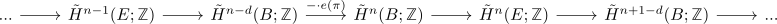

gysin sequence for an oriented fibration
Proposition
Let $\pi: E \rightarrow B$ be a oriented spherical fibration of rank $d-1$. Then the integral gysin sequence is defined as long exact sequence

where the map $- \cdot e(\pi)$ is the multiplication with the euler class under the thom isomorphism
Proof
consider the cofiber sequence

which induces a long exact sequence on reduced cohomology

where applying the thom isomorphism gives